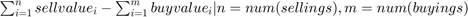

Contents
classdef PerformanceMeasurement %Performance measurement module % here goes major implementation of different performance % measurements of our trading properties % containers.Map exchange_api_instances; % map of exchange API instances. use keys(exchange_api_instances) to retrieve keys associated with exchange instances end methods
constructor
function self = PerformanceMeasurement() self.exchange_api_instances = containers.Map; end
ans =
PerformanceMeasurement with properties:
exchange_api_instances: [0×1 containers.Map]
register exchange
inputs: exchangeName: STRING name of exchange to be registered exchangeInstance: instance of exchange API
function self = setExchange(self, exchangeName, exchangeInstance) if ~isa(exchangeName,'char') || ~ismepty(exchangeInstance) self.exchange_api_instances(exchangeName) = exchangeInstance; else error('PerformanceMeasurement::setExchange(): exchangeName or exchangeInstance parameter not set -> exit'); end end
Trigger update of performance indicators
Once function triggered it will run over all exchanges registered via setExchange(), will fetch according data and will calculate performance values. Make sure that your strategies places orders with unique ID that identifies the strategy. Format for order IDs: STRATEGY_TRAIDINGPAIR-uniqueLongFigure
function updatePerformanceIndicators(self) if size(self.exchange_api_instances, 1) > 0 exchangeInstances = values(self.exchange_api_instances); for i=1:size(exchangeInstances, 1) exchangeInstances{i}; end else warning('PerformanceMeasurement::updatePerformanceIndicators(): no exchange registered for update the performance'); end end
profit loss over full period
calculates profit/loss over full period of trades. 
function profitLossOverFullPeriod(self, exchangeInstance) end
end end